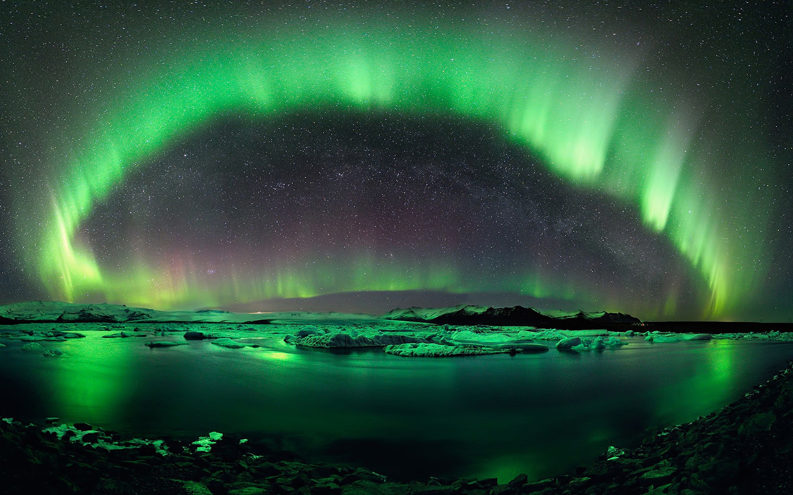

|  |
Mağara resimlerinden anladığımız kadarıyla en az 32.000 yıldır insanlığın dikkatini cezbeden kutup ışıkları, adını Roma mitolojisindeki şafak tanrıçası Aurora’dan alıyor. Kuzey Yarım Küre’deki kutup ışıklarını 1619 yılında tarif eden Galileo Galilei’nin onlara verdiği isim olan “aurora borealis” yani kuzey ışıkları ifadesini hâlen kullanıyoruz. Galileo bu ışık gösterisine atmosferimizden yansıyan güneş ışınlarının yol açtığını düşünmüştü. Güncel açıklamamız ise Galileo’nunkinden oldukça farklı. Eriyik hâldeki demir çekirdeği sayesinde Dünya, bir çubuk mıknatısa benzer biçimde kuzey ve güney kutuplara sahiptir. Bu dev mıknatısın manyetik alanını kapsayan bölgeye manyetosfer denir. Manyetosfer, gezegenimizin atmosferini ve canlılarını uzayda hızla ilerleyen yüksek enerjili parçacıklardan tıpkı bir kalkan gibi korur. Güneş aktiviteleri sonucunda yayılan plazma hâlindeki bu yüklü parçacıklar manyetosfer tarafından karşılanır. Manyetosferin Güneş’e bakan yüzü parçacıklarla çarpışarak dalgalanır ve aksi yöne doğru bir kuyruk oluşturarak damla biçimini alır. Kuyruk bölümünde hapsedilen parçacıklar, dalgalanmalar sonucunda, dev mıknatıs özelliğindeki Dünya’nın kutuplarına doğru hızlanarak ilerler. Atmosferin üst katmanlarına ulaşan parçacıklar, buradaki atom ve moleküllere enerjilerini aktarır. Dünya’nın manyetik alan çizgilerinin yoğunlaştığı kutup bölgelerinde yaşanan bu enerji aktarımı sonrasında fazladan enerji kazanan atom ve moleküller, bu enerjiyi ışık formunda yayar. Güneş rüzgârlarındaki parçacık miktarınca yoğunluk gösteren ışık gösterisi, aktarılan fazladan enerjinin tamamı ışığa dönüşünceye dek devam eder. Manyetik kuyruktan kutuplara doğru akan parçacıklar iki kutba da aynı anda ulaşır ve kutup ışıkları her iki kutupta aynı anda oluşur. Güney kutbundaki ışıklara “aurora australis” yani güney ışıkları adı verilir. Kutup ışıklarındaki renk çeşitliliğiyse atmosferdeki elementlerin farklı renkte ışık yaymasından kaynaklanır. Eğer parçacıklar enerjilerini oksijen atomlarına aktarırsa uzun dalga boylarındaki yeşil ve kırmızı ışık, azot atomlarına aktardıysa kısa dalga boylu mavi ışık oluşur. Yüksek parçacık miktarı içeren kutup ışıkları, izleyenlere etkileyici bir gösteri sunsa da radyo ve GPS sinyallerini engelleyebilir veya elektrik kesintilerine yol açabilir. |